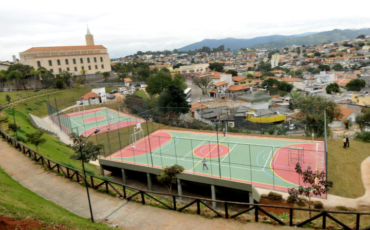

PARQUE JARDIM DO LAGO
O Parque do Jardim do Lago foi inaugurado em 2015 e conta com área de lazer com duas quadras poliesportivas, dois playgrounds, duas academias ao ar livre, pista de skate, circuito de slackline, pista de caminhada com cerca de dois quilômetros, dois vestiários e duas guaritas com o Programa Parque Seguro, com monitoramento 24 horas.

- Endereço: Entre as ruas José Pedro de Oliveira e Av. dos Expedicionários
- Horário de Funcionamento: De segunda à sexta das 7h às 16h. Sábado, domingo e feriado das 7h às 17h
PARQUE JARDIM DO LAGO
O Parque Jardim do Lago está localizado no Endereço: Entre as ruas José Pedro de Oliveira e Av. dos Expedicionários.